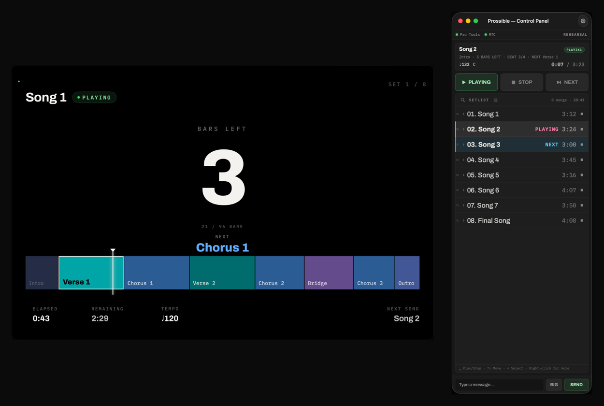
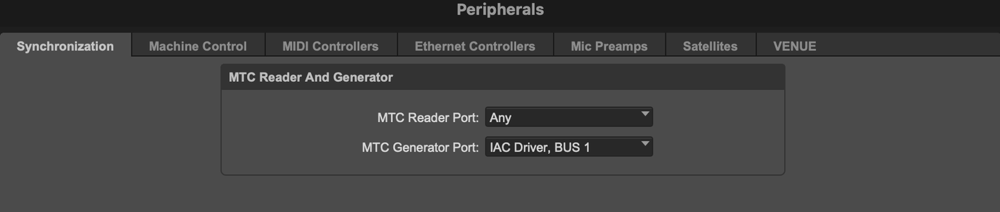
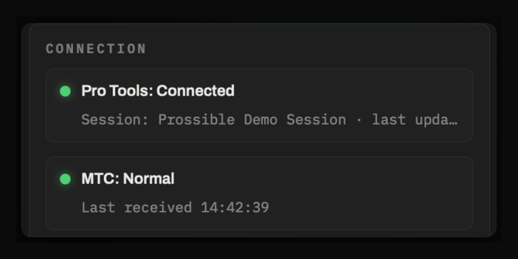

From a fresh install to a synced stage display in about ten minutes. Prossible runs on the same Mac as Pro Tools — it talks to it locally over PTSL and follows position over MTC.
Download from the Mac App Store. On first launch, grant Local Network access when prompted — LAN View depends on it.
Prossible opens Prossible — Control Panel (your operator surface) and Prossible — Stage Display (the screen the band sees). If you don't need the stage window, turn off Open Stage Display at launch in Settings — ⌘⇧D reopens it any time.

STAGE DISPLAY (LEFT) · CONTROL PANEL (RIGHT)
Open the show session — the one with your song and section markers — in Pro Tools on this same Mac. Prossible builds its setlist straight from those markers; there is nothing to export and no second file to maintain.
One-time setup is two short jobs: an IAC bus so Pro Tools can send MTC, and pointing Pro Tools at it. After that, connecting is a two-click routine at every soundcheck.
MTC travels from Pro Tools to Prossible over a virtual MIDI bus built into macOS — the IAC driver. You set it up once per Mac.
Press ⌘Space, type Audio MIDI Setup, and hit Return. It ships with macOS.
In the menu bar, choose Window → Show MIDI Studio. A grid of MIDI devices appears.
Double-click IAC Driver and check Device is online. The icon turns from grayed-out to active.
The default IAC Driver Bus 1 is all you need. If the ports list is empty, add one with the + button. A dedicated port named Prossible MTC also works if you prefer labeled routing.
Two connections, two jobs: MTC carries the playback position, PTSL carries markers and guarded transport. Requires Pro Tools 2023.6 or later with PTSL — verified on the latest releases.
In Pro Tools, open Setup → Peripherals… and pick the Synchronization tab. In the MTC Reader And Generator group, set MTC Generator Port to your IAC bus. Leave MTC Reader Port as you find it — that one is Pro Tools listening, and Prossible has no use for it.

PRO TOOLS ▸ SETUP ▸ PERIPHERALS ▸ SYNCHRONIZATION (CROPPED).
THE WINDOW LAYOUT VARIES BY PRO TOOLS VERSION, AND THE IAC PORT NAME APPEARS IN YOUR MAC'S SYSTEM LANGUAGE.
MTC Reader Port is Pro Tools' own MTC input — Prossible never uses it, so leave it alone. MTC Generator Port is the only value you change: pick the IAC bus you brought online in the previous section. Pro Tools names it device-then-port, so Bus 1 reads as IAC Driver, Bus 1. Prossible's own MIDI Input has to point at the same bus.
In the Control Panel, set SOURCE to Real (PTSL+MTC). A MIDI Input dropdown appears next to it.
Choose the same IAC port (IAC Driver Bus 1 or your named port) in MIDI Input, then press Reconnect. Pro Tools must be running with the session open — PTSL connects to the live session, not a file.
The status card should read Pro Tools: Connected and MTC: Normal, both green. MTC: Normal only appears once Pro Tools is actually rolling — stopped, the generator sends nothing but locates.

CONNECTION CARD · CONTROL PANEL
Press RESYNC in the SESSION SYNC card. Prossible reads every memory location and builds the setlist — without moving the Pro Tools cursor, counter, or playhead. Resync again any time you edit markers.
Pro Tools: Connected but MTC: Stale — recheck step 01: MTC Generator Port has to name the same IAC bus Prossible is listening on. Then confirm Pro Tools is actually rolling; stopped, it only emits MTC when you locate.
Disconnected after Reconnect — a session has to be open (PTSL attaches to the live session, not a file), and Prossible has to be on the same Mac as Pro Tools.
No IAC port in the MIDI Input list — press Refresh. If it's still missing, the IAC driver's Device is online box is the usual culprit.
Nothing responds to RESYNC, SOURCE, or Settings — the header reads SHOW MODE. Switch the MODE card at the top of Settings back to REHEARSAL; SHOW mode locks all of it on purpose.
Prossible parses memory location names. A two-digit number and a period start a song; a leading > marks a section; SongEnd arms the auto-stop. Everything else is left alone and listed as an Unrecognized warning after resync.
NN.Song Name/BPM/KEY — a two-digit number, a period, the title, then optional BPM and key separated by slashes. 07.Ballad/96 and 12.Jam are both valid; empty slots are allowed, as in 12.Jam//Am.
Start the name with > — >Verse 1, >Chorus 2. Sections drive the stage display's bar countdown and the "what's next" line.
A marker named SongEnd (case doesn't matter) marks the end of the song. Per song, the setlist row's right-hand toggle decides what happens there: ■ stop cleanly (default) or ↓ continue into the next song.
Any other naming is not parsed — it shows up as an Unrecognized warning on the session sync card so you can spot typos. For talk breaks or notes between songs, use Add Note Below from the setlist's right-click menu instead of a marker.
The session sync card counts what it parsed and collects the rest behind a warnings chip — click it to expand the list. Most entries are typos in a marker name. Two are worth knowing by sight:
Marker excluded during resync usually clears on a second RESYNC; if it doesn't, the marker was renamed in Pro Tools but the session was never saved.
A warning that a marker's position could not be resolved means Pro Tools is reporting positions in a format Prossible can't place on a timeline. Set the main counter in the Pro Tools edit window to Samples or Bars|Beats and resync. Prossible never moves your counter back on its own.
01.Song Name alone is valid; omitted fields simply don't appear on the displays. Reordering the set happens in Prossible (drag the handle at the front of each row) — your Pro Tools markers are never touched.The stage display, served to every phone and tablet on the local network — no app install for the band. LAN View is part of the Pro unlock and works entirely offline; a router with no uplink is fine.
In Settings, open the LAN VIEW card and enable LAN view server. The server stops when the app quits, so switch it on as part of your show-day routine.
The card shows the port, Bonjour status, a QR code, and the plain address. If the Mac isn't on any network you'll see No usable network address — join Wi-Fi or Ethernet first. On networks that block Bonjour, the QR and address still work.
On a phone connected to the same network, scan the QR with Safari or Chrome. With Require PIN on (the default), the QR carries the PIN — scanning is enough. Typing the address by hand asks for the PIN once.
Leave the page open in the browser rather than saving it to the home screen — some iOS versions don't keep the screen awake reliably from a home-screen icon.
Viewers are read-only, but you can approve a single device — typically your own phone — for transport control. When it asks, a LAN Controller Request alert appears on the Mac; press Approve within 60 seconds. The phone then gets the same guarded PLAY / STOP / NEXT buttons as the Control Panel — same rules, same logging. One controller at a time; approving a new one demotes the old.
The card lists connected devices — the controller wears a CONTROLLER badge, and Revoke works even mid-show. Regenerate PIN disconnects everyone at once. In SHOW mode the server toggle and PIN settings are locked so nothing gets switched off by accident.
Two Macs, one show. Each Mac runs its own Pro Tools and chases its own MTC — the pairing syncs the operator state (order, colors, skips, mode, dimmer) so the backup mirrors your decisions, not your playback. Audio and MIDI redundancy stay with your existing failover rig. Part of the Pro unlock.
Both Macs on the same network, both running the same Pro Tools session with identical markers, both with SOURCE = Real showing Pro Tools: Connected / MTC: Normal, and both with the LAN view server on — pairing and reconnection run over it. The backup follows its own Pro Tools; it never borrows the main's screen.
Settings → REDUNDANCY card → Pair Consoles… → Show Code. You get a one-time six-digit code, valid for five minutes.
Same card → Pair Consoles… → Enter Code — pick the main Mac from the list, type the six digits, press Pair. Both cards now show each other's name and CONNECTED, and role badges appear: ACTIVE on the main, STANDBY (linked) on the backup. If the roles land backwards, fix them with the PRIMARY / BACKUP segment.
Reorders, colors, skips, dimmer, and mode changes on the ACTIVE Mac appear on the standby within a second. On the standby, editing is locked — but its own PLAY / STOP / NEXT and RESYNC keep working, because its playback is its own.
If the main Mac dies, the backup's badge flips to STANDBY — LINK LOST within five seconds — music and stage display never stop, since it chases its own MTC. Press Promote to Active to unlock editing and take the lead. Promotion is always a human decision, never automatic.
When the old main comes back, it reconnects automatically and settles into STANDBY (linked) without a single popup, inheriting whatever changed while it was gone. If both consoles ever claim ACTIVE (both were promoted while split), a red SPLIT BRAIN badge appears on both — press Promote to Active once more on the console that should lead.
Pairing survives reboots and re-finds the partner over Bonjour even if IP addresses change. Push State Now forces a full resync without touching playback; Unpair requires confirmation and is locked during SHOW mode.
One-time setup is behind you. This is the part you repeat — soundcheck to downbeat, in the order you'd actually do it.
Open the session in Pro Tools, open Prossible, confirm Pro Tools: Connected and MTC: Normal, press RESYNC. Check the song count on the sync card against the set on paper, and open the warnings chip if there is one. If you use LAN View, switch LAN view server on now — it does not survive a quit.
Drag the handle at the front of each setlist row until the order matches tonight, and set each song's end behavior on the right — ■ to stop at SongEnd, ↓ to run on into the next song. The order is Prossible's own; your Pro Tools markers are untouched, and it survives a restart.
Stopped, clicking a song jumps straight to it — cheap to spot-check an entry. Playing, clicking a song does nothing but flash a reminder; the transport only moves on PLAY, STOP, NEXT, or an armed SongEnd. That asymmetry is deliberate.
Settings → MODE → SHOW. Drag handles disappear, reordering and resync lock, and the LAN server and PIN settings freeze — the panel keeps only the controls you need mid-show. REHEARSAL gives it all back.
PLAY starts the song that's standing by. NEXT queues the following song with a blue NEXT badge, and the next STOP leaves that song ready. A song set to ■ stops itself on its SongEnd downbeat, every pass, and the next song comes up ready — no finger on the spacebar.
Edit it in Pro Tools, save, drop back to REHEARSAL, and press RESYNC. Resync reads the memory locations without moving the Pro Tools cursor, counter, or playhead — safe to do between songs. Your running order and per-song settings are reconciled onto the new markers, not thrown away.